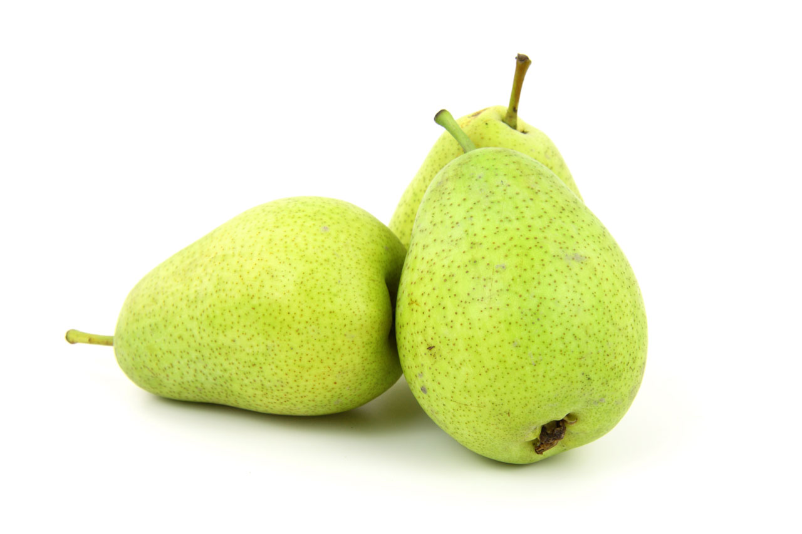

In this lesson we will learn about the basic verb “to be/is/are”, or “-이다”. Notice how -이다 looks familiar - it is the structure used in “-입니다” as in 나는 한국 사람입니다!
-이다 and -입니다 both mean “to be”, but the former is for casual social situations while the latter is more formal. In Korean, formalities and language is very important and it is crucial to make the distinction early on in the learning journey.
| Two forms of the casual “to be”: | |
|---|---|
| -이에요 | -예요 |
These forms create the sentence:
“It is _(object/adj/noun)_”.
If the object/adj/noun before “to be” ends in a consonant, use -이에요.
If the object/adj/noun ends in a vowel, use-예요.
Examples:
Now, we must also learn how to say “It is not _(object/adj/noun_”.
To do this, simply add -아니에요 to the ending of the word, no matter consonant or vowel!
Examples: